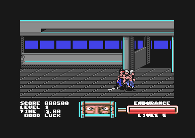

<meta charset="utf-8">
<meta name="viewport" content="width=device-width, initial-scale=1">
<title>{{title}}</title>
<link rel="preconnect" href="https://fonts.googleapis.com">
<link rel="stylesheet" href="https://fonts.googleapis.com/css2?family=Lato:wght@400;700;900&family=IBM+Plex+Mono:wght@400;500&display=swap">
<style>
:root{
  --bg:#23262d; --paper:#e9e7e1; --surface:#ffffff; --surface-2:#f1efea; --line:#d5d3cc; --line-soft:#e0ded8;
  --ink:#2f3136; --ink-soft:#55585f; --ink-mute:#80838a;
  --link:#1f5fa8; --link-hover:#154480; --accent:#1f5fa8;
  --amber:#c25a00; --cyan:#1f5fa8; --coral:#d04a3a; --green:#2a8a4a; --violet:#4a5bd6; --hl:#fff0c2;
  --chip:#2f3136; --chip-ink:#ffffff;
  --c64blue:#40318d; --c64grey:#686868;
  --fd:'Lato',system-ui,sans-serif; --fb:'Lato',system-ui,sans-serif; --fm:'IBM Plex Mono',ui-monospace,Menlo,monospace;
  --col:1080px; --gx:68px; --fs:17px; --lh:1.6; --hw:900; --h1:46px; --h2:26px; --sy:48px; --pp:26px; --r:10px;
  --plate-shadow:0 1px 2px rgba(0,0,0,.05),0 4px 14px rgba(0,0,0,.05);
}
*{box-sizing:border-box}
html{background:var(--bg);min-height:100%}
body{background:var(--paper);color:var(--ink);font-family:var(--fb);font-size:var(--fs);line-height:var(--lh);max-width:var(--col);margin:0 auto;min-height:100vh;padding:0 0 4rem}
h1,h2,h3{font-weight:var(--hw);letter-spacing:-.01em;text-wrap:balance;color:var(--ink);margin:0}
.wrap{padding:0 var(--gx)}
.hero{padding:48px var(--gx) 8px;text-align:left}
.eyebrow{font-family:var(--fm);font-size:12px;letter-spacing:.08em;text-transform:uppercase;color:var(--ink-mute);margin:0 0 10px}
.hero h1{font-size:var(--h1);line-height:1.15;letter-spacing:-.02em;margin:0 0 14px}
.hero .sub{margin:0 0 .6em;color:var(--ink-soft)}
section{padding:var(--sy) 0 24px}
section:last-of-type{border-bottom:none}
.fig{font-family:var(--fm);font-size:12px;letter-spacing:.08em;text-transform:uppercase;color:var(--ink-mute);margin:0 0 10px}
h2.t{font-size:var(--h2);margin-bottom:12px}
.lede{color:var(--ink-soft);margin:0 0 30px}
.plate{background:var(--surface);border:1px solid var(--line);border-radius:var(--r);padding:var(--pp);box-shadow:var(--plate-shadow)}
.cap{font-size:14px;color:var(--ink-mute);margin-top:14px;line-height:1.55}
.cap b{color:var(--ink);font-weight:700}
code{font-family:var(--fm);font-size:.82em;background:var(--chip);color:var(--chip-ink);border-radius:4px;padding:2px 6px;white-space:nowrap}

img{max-width:100%;height:auto;image-rendering:pixelated;border-radius:4px}
.shots{display:grid;grid-template-columns:1fr 1fr;gap:20px}.shots figure{margin:0}
@media(max-width:700px){:root{--gx:24px;--h1:36px}.shots{grid-template-columns:1fr}}
</style>
<!-- tabs -->
<header class="hero">
  <p class="eyebrow">1988 · Imagine Software · Commodore 64</p>
  <h1>Target Renegade</h1>
  <p class="sub">Fight your way from a car park to Mr. Big's bar. This cartridge edition gives you five lives to begin the journey.</p>
</header>
<main class="wrap">
<section>
  <h2 class="t">The game</h2>
  <p>You move across the floor to meet enemies, then combine a direction with fire to attack. The Commodore manual describes five stages, with a different gang waiting in each. The first fight begins in a car park.</p>
  <div class="shots plate">
    <figure><figcaption class="cap">The title names Commodore as pause and Space as the music switch. Fire on joystick port 1 starts play.</figcaption></figure>
    <figure><figcaption class="cap">Stage one. The panel shows score, level, time, endurance, and remaining lives.</figcaption></figure>
  </div>
</section>
<section data-part="resident" id="music">
  <p class="fig">02 · Sound</p><h2 class="t">Music: nine cues</h2>
  <p>Gary Biasillo's music uses three voices. Each voice reads a stream of notes and commands. Commands can repeat a phrase, change an instrument or bend a note while it plays. The five longer cues keep running; four shorter cues end by switching off their streams.</p>
  <div class="plate" id="tr-music">Loading music…</div>
  <p class="cap">The player runs the isolated music driver at <code>$0700</code> and <code>$07BF</code> through the site's C64 sound-chip model. All nine cues were checked against the full game image: 150,497 calls, with every sound-chip write matching in order. The chip model approximates the sound of a real SID.</p>
</section>
<section>
  <h2 class="t">Five lives in this edition</h2>
  <p>The supplied EasyFlash edition starts with five lives. At <code>$8000</code>, initialization takes the low nibble of <code>$35</code> and stores the resulting five in the lives counter at <code>$020C</code>. The first-stage display agrees.</p>
  <p>The <a href="https://spa2.speccy.org/Instructions/t/Total.pdf">Commodore manual</a> says three lives. The difference is recorded for this cartridge edition; the reason for it remains open.</p>
</section>
<section>
  <h2 class="t">The stages</h2>
  <p>Stages 1–3 share the first resource load; stages 4–5 use a second load. Native loading and stage setup reproduced all five settings. The engine keeps running while fonts, colours and enemy graphics are exchanged.</p>
  <figure class="plate" style="margin:0"><figcaption class="cap">External reference from <a href="https://www.c64-wiki.de/wiki/Target_Renegade">C64-Wiki</a>. An external view of the five stage settings, alongside the native captures recorded in the analysis.</figcaption></figure>
</section>
</main>

<script src="../../lib/c64.js"></script>
<script src="../../lib/cpu6502.js"></script>
<script src="../../lib/sid.js"></script>
<script>
/* trMusic */
function createDriver(data, C64Cpu) {
  const base = new Uint8Array(65536);
  base.set(data.bytes, 0x0700);
  const sid = new Uint8Array(25);
  let cpu, m, writes = [], bus = 0, stopped = true;
  const io = {
    read() { return bus; },
    write(a, v) {
      if (a >= 0xD400 && a <= 0xD418) {
        sid[a - 0xD400] = v; writes.push(a - 0xD400, v); bus = v;
      }
    }
  };
  return {
    sid,
    get writes() { return writes; },
    readback(env, osc, value) { bus = value; },
    init(cue) {
      m = base.slice(); cpu = new C64Cpu.CPU(m, {port: 0x35, io});
      sid.fill(0); writes = []; bus = 0; stopped = false;
      cpu.call(0x0700, {x: cue}, {maxSteps: 100000});
    },
    play() {
      writes = [];
      if (!stopped) cpu.call(0x07BF, {}, {maxSteps: 100000});
    },
    stop() {
      stopped = true; writes = [24, 0]; sid[24] = 0;
    },
    playing() { return !stopped && !!(m[0x20AC] | m[0x20AD] | m[0x20AE]); },
    voice(x) { return {stream: m[0x84+x*2] | m[0x85+x*2] << 8, remaining: m[0x2023+x]}; }
  };
}
// end of trMusic
(async () => {
  const root = document.getElementById('tr-music');
  try {
    const L = await C64.load('parts/resident/listing.json');
    C64Sid.mount(root, {driver: createDriver, data: {bytes: L.ram.slice(0x0700, 0x2023)},
      tunes: ['0 · Title', '1 · Stages 1 and 3', '2 · Stage 4', '3 · Stages 2 and 5', '4 · Ending', '5 · Short cue', '6 · Short cue', '7 · Short cue', '8 · Transition'],
      rows: [{k: 'Stream', f: v => '$'+v.stream.toString(16).toUpperCase().padStart(4,'0')}, {k: 'Countdown', f: v => String(v.remaining)}]});
  } catch (e) { root.textContent = 'Music could not load: '+e.message; }
})();
</script>
